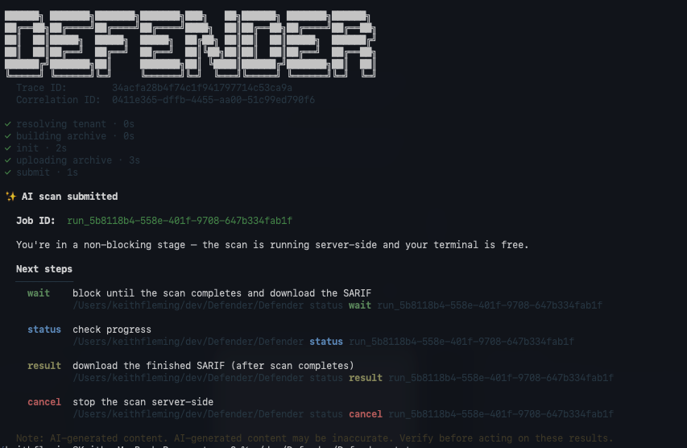

Defender CLI에서 스캔 실행
터미널에서 Defender CLI를 내려받아 에이전트 코드 스캔을 실행합니다. CLI는 저장소의 로컬 복사본을 스캔합니다.
사전 요구사항
- Defender CLI 인증 완료 (Defender CLI 설정). CI/CD 등 비대화형 자동화에는 앱 기반 인증, 로컬 터미널 스캔에는 대화형 인증을 사용합니다.
- 테넌트 환경 변수 설정 (예:
DEFENDER_ASPM_TENANT_ID). 필요한 변수는 인증 방법에 따라 다릅니다. - 스캔할 저장소의 로컬 clone.
네트워크 허용 목록(Allow list)
Defender CLI를 실행하는 머신 또는 파이프라인에서 다음 도메인에 접근할 수 있어야 합니다. 아웃바운드가 제한된 환경이라면 아래를 먼저 허용하세요.
| 범주 | 도메인 |
|---|---|
defender scan ai-scan 필수 | *.cli.dfd.security.azure.com · *.blob.core.windows.net · *.azurefd.net · *.login.microsoftonline.com · *.graph.microsoft.com |
| GitHub Actions (OIDC) | *.token.actions.githubusercontent.com |
| Azure Pipelines (OIDC) | *.dev.azure.com |
| 텔레메트리(권장) | *.in.applicationinsights.azure.com · *.dc.services.visualstudio.com |
| 선택 | *.aka.ms |
scan fs 필수 | *.ghcr.io · *.public.ecr.aws · *.registry-1.docker.io · *.auth.docker.io |
설치
Windows
Invoke-WebRequest `
-Uri "https://cli.dfd.security.azure.com/public/v2/latest/Defender_win-x64.exe" `
-OutFile "defender.exe"Linux / macOS
# Linux (x64)
curl -fL -o defender \
"https://cli.dfd.security.azure.com/public/v2/latest/Defender_linux-x64"
chmod +x defender
# macOS (Apple Silicon)
curl -fLo Defender https://cli.dfd.security.azure.com/public/v2/latest/Defender_osx-arm64
chmod +x Defender
xattr -d com.apple.quarantine Defender 2>/dev/null || true그 밖에 Linux arm64, macOS Intel(osx-x64) 바이너리도 같은 경로에서 제공됩니다.
스캔
스캔은 기본적으로 비동기로 실행됩니다. 스캔을 제출하면 CLI는 완료를 기다리지 않고 즉시 종료되며 Job ID를 반환합니다. Job ID는 이후 결과 아티팩트 다운로드·작업 취소·완료 대기·상태 조회에 사용하는 영구 참조입니다.
아래 명령에서 <TARGET_SOURCE>를 소스 코드 디렉터리 경로(예: my-code\project1)로 바꿉니다. 코드 디렉터리 안에서 실행하는 경우 .을 사용합니다. (Windows는 .\defender.exe, macOS/Linux는 ./defender로 실행합니다.)
./defender scan ai-scan submit <TARGET_SOURCE>
# 출력: Job submitted: <JOB_ID>
wait·status·result·cancel로 작업을 관리합니다.스캔 프로파일 (Preview)
스캔 프로파일은 어떤 AI 모델로 스캔할지 선택합니다.
| 프로파일 | 모델 | 사용 시점 |
|---|---|---|
gpt-general-profile | GPT-5.4, GPT-5.3-Codex, GPT-5.4-Mini | 범용 에이전트 코드 스캐닝(기본 모델 세트). |
mai-augmented-profile Preview | 위 3종 + MAI-Cyber-1-Flash | 기본 모델을 사이버 특화 MAI-Cyber-1-Flash로 보강하고 싶을 때. |
# 사용 가능한 프로파일·기본값 확인
./defender scan profile model list
./defender scan profile model show-default
# 특정 프로파일로 이번 스캔만 실행 (기본값 override)
./defender scan ai-scan submit . --model-profile gpt-general-profile
./defender scan ai-scan submit . --model-profile mai-augmented-profile단계별 비동기 워크플로
# 1) 제출 후 Job ID 받기
./defender scan ai-scan submit .
# 출력: Job submitted: <JOB_ID>
# 2) Job 상태 확인
./defender status <JOB_ID>
# 3) (선택) 완료 대기 후 결과 다운로드
./defender status wait <JOB_ID> -o results.sarif심각도 필터 / Job 관리
--severity 플래그로 반환 결과의 임계값을 지정합니다. 허용 값: low(기본값), medium, high, critical. 임계값 이상 심각도만 반환됩니다.
./defender scan ai-scan submit . --severity high # High·Critical만
./defender status # 추적 중인 모든 Job
./defender status result <JOB_ID> # 완료된 리포트 재다운로드
./defender status log <JOB_ID> # 자동 저장된 디버그 로그 경로 출력
./defender status cancel <JOB_ID> # 실행 중 Job 취소status result는 로컬 SARIF 파일을 지웠거나, wait 명령이 완료 전 중단됐거나, 다른 머신에서 제출한 작업의 결과를 가져올 때 특히 유용합니다.
문제 해결
특정 실행의 자동 저장 로그 경로를 확인하려면 스캔을 실행한 동일 머신에서 ./defender status log <JOB_ID>를 사용합니다. CLI가 예기치 않게 동작하면 --log-level debug로 다시 실행해 상세 진단 출력을 얻을 수 있습니다. --log-level 허용 값: trace, debug, info(기본값), warn, error. --log-file을 지정하면 콘솔 대신 파일로 출력합니다.
./defender <실패한-명령> --log-level debug --log-file ./defender-debug.log
# 예: 스캔 실패 시
./defender scan ai-scan submit <TARGET_SOURCE> --log-level debug